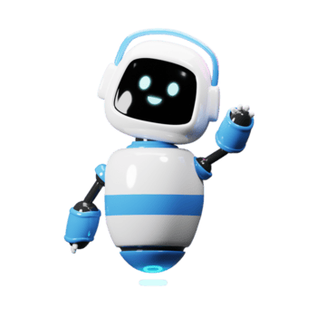

<!-- ARC ASSISTANT SINGLE BUTTON VERSION -->

<!DOCTYPE html>
<html lang="en">
<head>
    <meta charset="UTF-8">
    <meta name="viewport" content="width=device-width, initial-scale=1.0">
    <title>Document</title>


    

<link rel="stylesheet" href="https://cdn.jsdelivr.net/npm/@n8n/chat/dist/style.css" />

<style>
  :root {
    --chat--color--primary: #2563eb;
    --chat--color--primary-shade-50: #1d4ed8;
    --chat--window--width: 390px;
    --chat--window--height: 700px;
    --chat--border-radius: 20px;
    --chat--header--background: linear-gradient(135deg, #081120, #0f172a);
    --chat--body--background: #f4f8fc;
    --chat--message--font-size: 15px;
    --chat--message--padding: 14px 16px;
    --chat--message--border-radius: 16px;
    --chat--textarea--height: 58px;
    --chat--textarea--border-radius: 16px;
  }

  .n8n-chat-window {
    border: 1px solid rgba(148,163,184,0.18) !important;
    box-shadow: 0 25px 70px rgba(2,8,23,0.35) !important;
    overflow: hidden !important;
    backdrop-filter: blur(10px);
  }

  .n8n-chat-window-header {
    position: relative;
    padding-left: 74px !important;
    font-size: 0 !important;
    min-height: 78px !important;
  }

  .n8n-chat-window-header::before {
    content: "";
    position: absolute;
    left: 16px;
    top: 50%;
    transform: translateY(-50%);
    width: 44px;
    height: 44px;
    border-radius: 12px;
    background: url("/images/robot.png") center/cover no-repeat;
    box-shadow: 0 8px 20px rgba(37,99,235,0.28);
  }

  .n8n-chat-window-header::after {
    content: "ARC ASSISTANT\A Agent IA Professionnel";
    white-space: pre;
    position: absolute;
    left: 74px;
    top: 50%;
    transform: translateY(-50%);
    font-size: 15px;
    line-height: 1.25;
    font-weight: 800;
    color: #ffffff;
  }

  .n8n-chat-window-body {
    background:
      radial-gradient(circle at top right, rgba(37,99,235,0.08), transparent 28%),
      linear-gradient(180deg, #f8fbff 0%, #eef4fb 100%) !important;
  }

  .n8n-chat-message {
    box-shadow: 0 8px 22px rgba(15,23,42,0.06);
    animation: arcMessageIn 0.32s ease both;
  }

  .n8n-chat-message--bot {
    background: #ffffff !important;
    color: #0f172a !important;
    border: 1px solid #dbe4ee !important;
    border-left: 3px solid rgba(37,99,235,0.18) !important;
  }

  .n8n-chat-message--user {
    background: linear-gradient(135deg, #2563eb, #38bdf8) !important;
    color: #ffffff !important;
    border: 1px solid rgba(255,255,255,0.18) !important;
    box-shadow: 0 10px 24px rgba(37,99,235,0.24) !important;
  }

  .n8n-chat-message--user *,
  .n8n-chat-message--bot * {
    color: inherit !important;
  }

  .n8n-chat-input-container {
    background: rgba(255,255,255,0.96) !important;
    border-top: 1px solid #e2e8f0 !important;
    padding: 14px !important;
    display: block !important;
  }

  .n8n-chat-input-container textarea,
  .n8n-chat-input-container input,
  .n8n-chat-input-container div[contenteditable="true"] {
    color: #0f172a !important;
    background: #ffffff !important;
    border: 1px solid #cbd5e1 !important;
    border-radius: 16px !important;
    box-shadow: inset 0 1px 2px rgba(15,23,42,0.04);
  }

  .n8n-chat-input-container textarea::placeholder,
  .n8n-chat-input-container input::placeholder {
    color: #64748b !important;
  }

  /* Hide native n8n button completely */
  .n8n-chat-window-toggle,
  .n8n-chat-window-toggle * {
    display: none !important;
    opacity: 0 !important;
    visibility: hidden !important;
    pointer-events: none !important;
  }

  #arc-chat-launch {
    position: fixed;
    right: 24px;
    bottom: 24px;
    z-index: 999999;
    display: inline-flex;
    align-items: center;
    gap: 10px;
    border: none;
    border-radius: 999px;
    padding: 15px 20px;
    font-size: 15px;
    font-weight: 700;
    color: #ffffff;
    cursor: pointer;
    background: linear-gradient(135deg, #2563eb, #38bdf8);
    box-shadow: 0 18px 40px rgba(37,99,235,0.32);
    transition: transform 0.2s ease, box-shadow 0.2s ease;
  }

  #arc-chat-launch:hover {
    transform: translateY(-2px);
    box-shadow: 0 22px 45px rgba(37,99,235,0.38);
  }

  #arc-chat-launch .arc-launch-icon {
    width: 22px;
    height: 22px;
    border-radius: 50%;
    background: rgba(255,255,255,0.18);
    display: inline-flex;
    align-items: center;
    justify-content: center;
    font-size: 13px;
  }

  @keyframes arcMessageIn {
    from {
      opacity: 0;
      transform: translateY(10px) scale(0.98);
    }
    to {
      opacity: 1;
      transform: translateY(0) scale(1);
    }
  }

  @media (max-width: 640px) {
    :root {
      --chat--window--width: calc(100vw - 24px);
      --chat--window--height: 78vh;
    }

    #arc-chat-launch {
      right: 12px;
      bottom: 12px;
      padding: 14px 18px;
      font-size: 14px;
    }
  }
</style>
</head>
<body class="bg-gray-50">

<div id="n8n-chat"></div>

<!-- ARC CHAT LAUNCHER -->
<!-- <button id="arc-chat-launch">
  <span class="arc-launch-icon">🤖</span>
  <span>Parler avec notre IA</span>
</button> -->

<script type="module">


 window.addEventListener("load", function () {
    const change = document.querySelector('.chat-window-toggle');
    const win=document.querySelector('.chat-window');
    const header=document.querySelector('.chat-window .chat-header .chat-heading');
    console.log(header);
    

    if (change) {
         Object.assign(change.style, {
            position: "fixed",
            bottom: "20px",
            right: "20px",
            zIndex: "9999",
            padding: "12px 24px",
            background: "#007bff",
            color: "white",
            border: "none",
            borderRadius: "25px",
            cursor: "pointer",
            fontFamily: "inherit",
            fontSize: "14px",
            display: "inline-flex",
            alignItems: "center",
            gap: "8px",
            width:"150px",
            boxShadow: "0 4px 12px rgba(0,0,0,0.15)",
            transition: "transform 0.2s, box-shadow 0.2s"
        });
        change.innerHTML = `
           <span class="arc-launch-icon">🤖</span>
            <span>Parler avec notre IA</span>
        `;
    }
    
    
    if(win){
        win.style.marginBottom = "20%";
    }

   if (header) {
    header.innerHTML = `
        <div style="display: flex; align-items: center; gap: 10px; flex-direction: row;">
            
            <div class="chat-avatar" style="width: 50px; height: 50px;">
                
            </div>

            <div class="chat-info">
                <div class="chat-title">ARC ASSISTANT</div>
                <div class="chat-subtitle">Agent IA Professionnel</div>
            </div>

        </div>
    `;
}
});
  import { createChat } from 'https://cdn.jsdelivr.net/npm/@n8n/chat/dist/chat.bundle.es.js';

  createChat({
    webhookUrl: 'https://n8n.srv1139767.hstgr.cloud/webhook/80232ea0-9c30-4681-9a0f-00ce9b8595cc/chat',
    target: '#n8n-chat',
    mode: 'window',
    showWelcomeScreen: false,
    initialMessages: [
      'Bonjour 👋',
      'Je suis votre assistant IA professionnel. Comment puis-je vous aider aujourd’hui ?'
    ],
    i18n: {
      en: {
        title: '',
        subtitle: '',
        footer: '',
        placeholder: 'Écrivez votre message ici...',
        send: 'Envoyer'
      }
    }
  });

  // Re-implement the toggle logic properly
  const launchBtn = document.getElementById('arc-chat-launch');
  
  function openChat() {
    const nativeToggle = document.querySelector('.n8n-chat-window-toggle');
    if (nativeToggle) {
        nativeToggle.click();
    }
  }

  if (launchBtn) {
    launchBtn.addEventListener('click', openChat);
  }

  // Use a MutationObserver to show/hide the custom button based on window status
  const observer = new MutationObserver(() => {
    const chatWindow = document.querySelector('.n8n-chat-window');
    if (chatWindow && launchBtn) {
        const isVisible = chatWindow.offsetParent !== null;
        launchBtn.style.display = isVisible ? 'none' : 'inline-flex';
    }
  });

  observer.observe(document.body, { childList: true, subtree: true });

  // Optional: Add a delay to check initial state
  setTimeout(() => {
    const chatWindow = document.querySelector('.n8n-chat-window');
    if (chatWindow && launchBtn) {
      if (chatWindow.offsetParent !== null) {
        launchBtn.style.display = 'none';
      }
    }
  }, 1000);
</script>
<!-- END ARC ASSISTANT SINGLE BUTTON VERSION -->

</body>
</html>